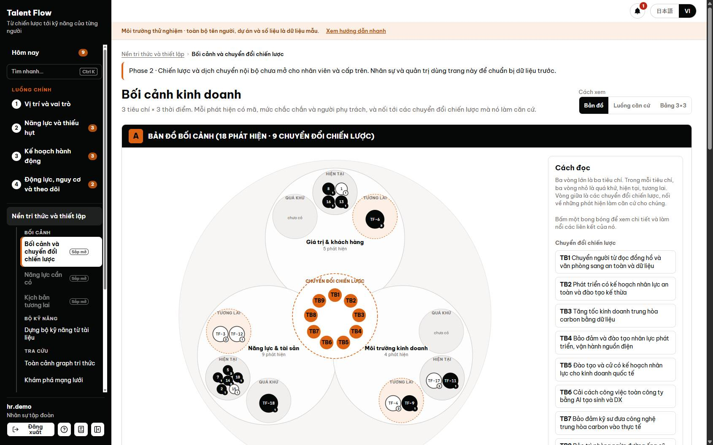
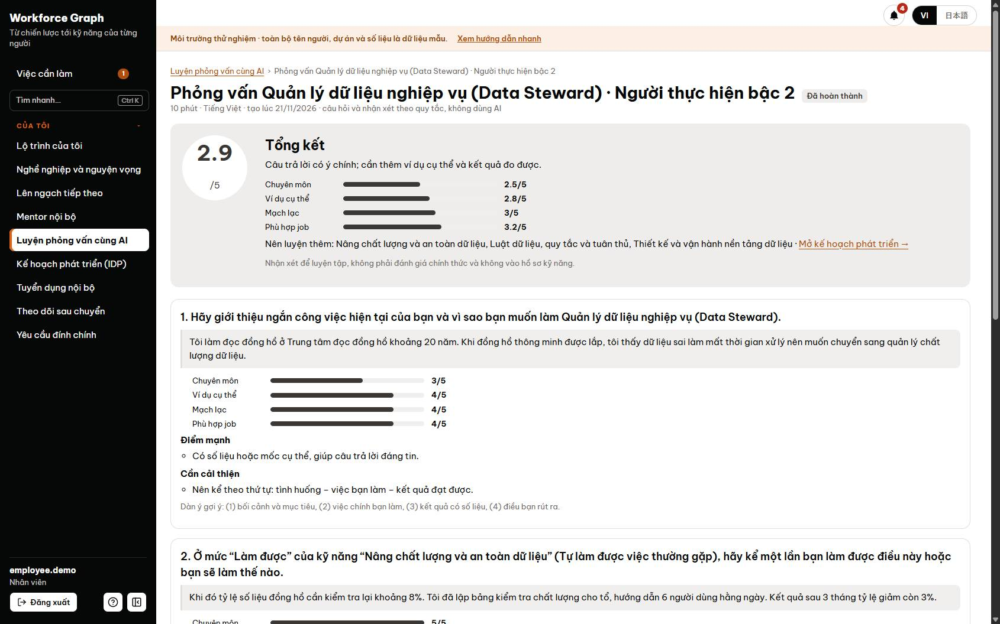
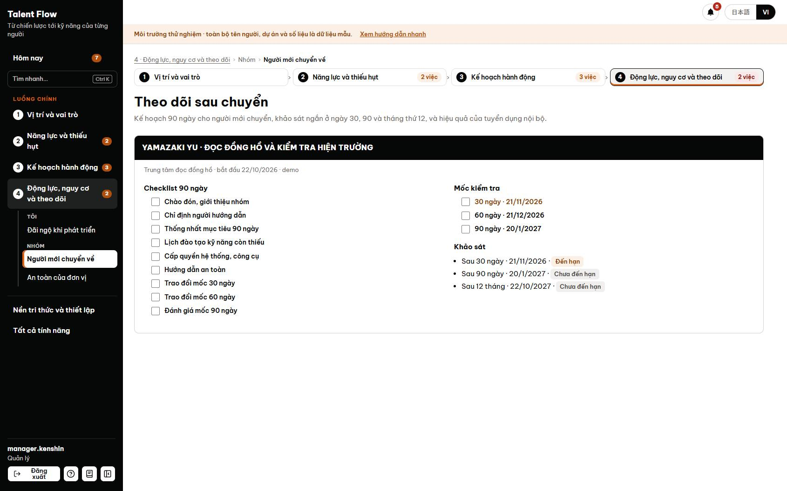
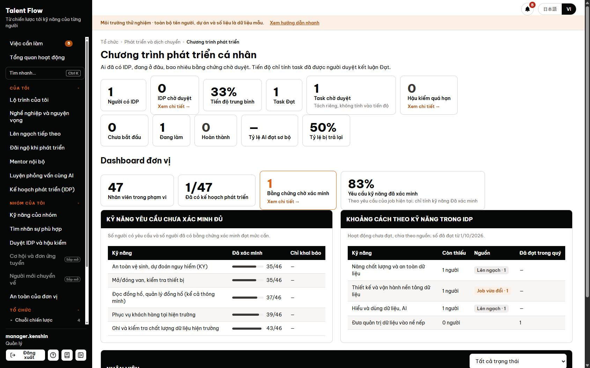
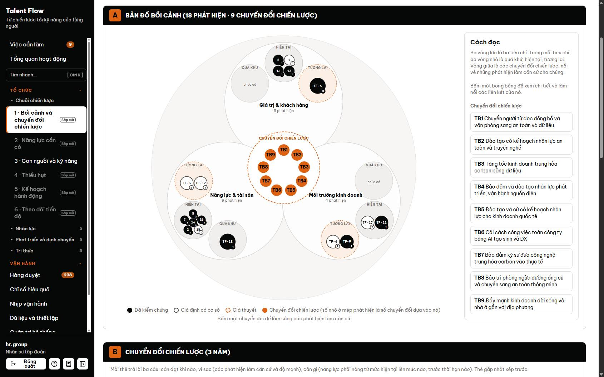
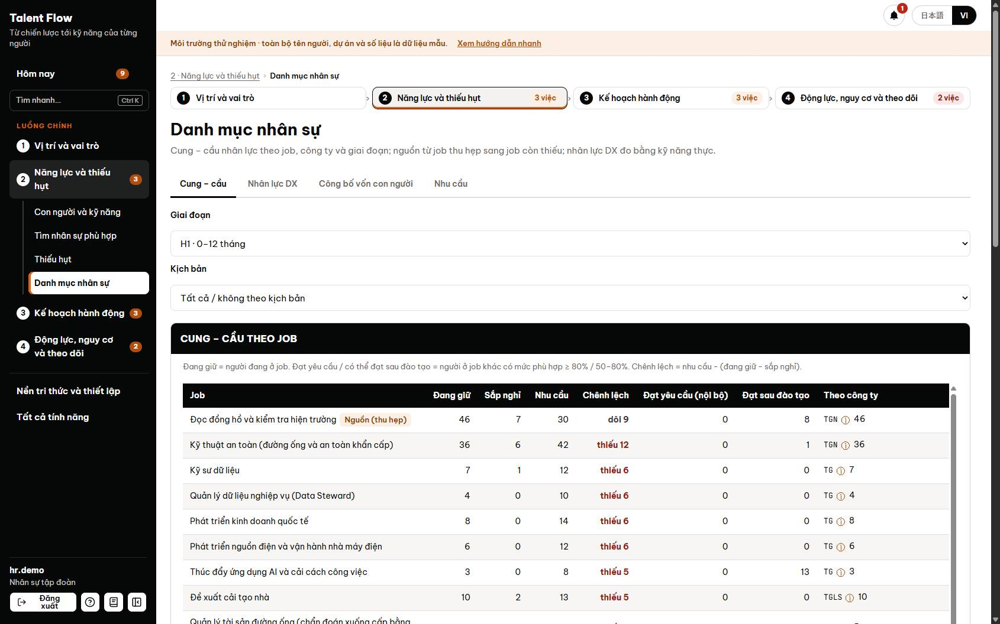
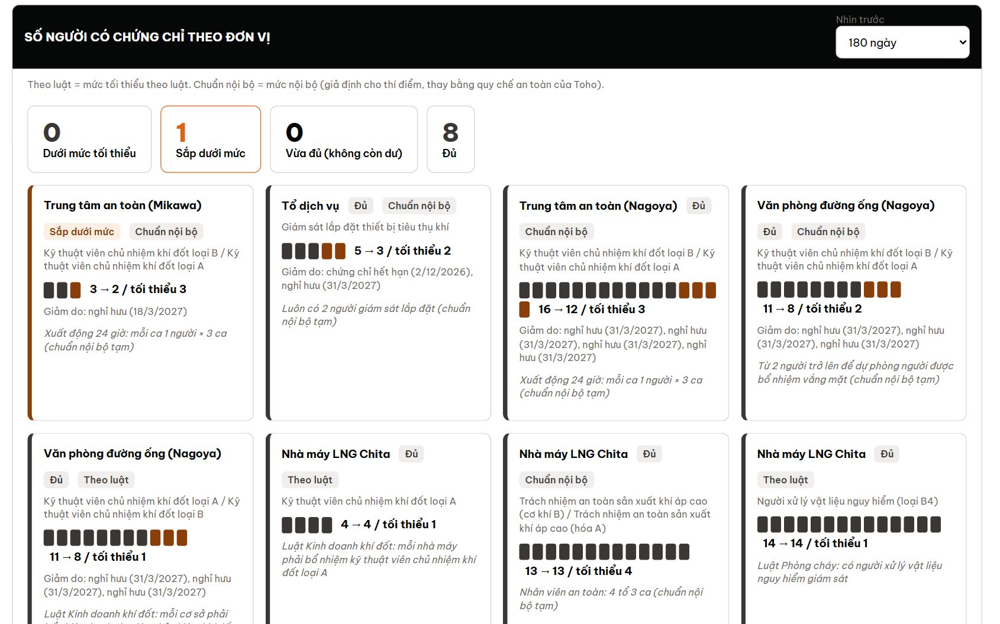
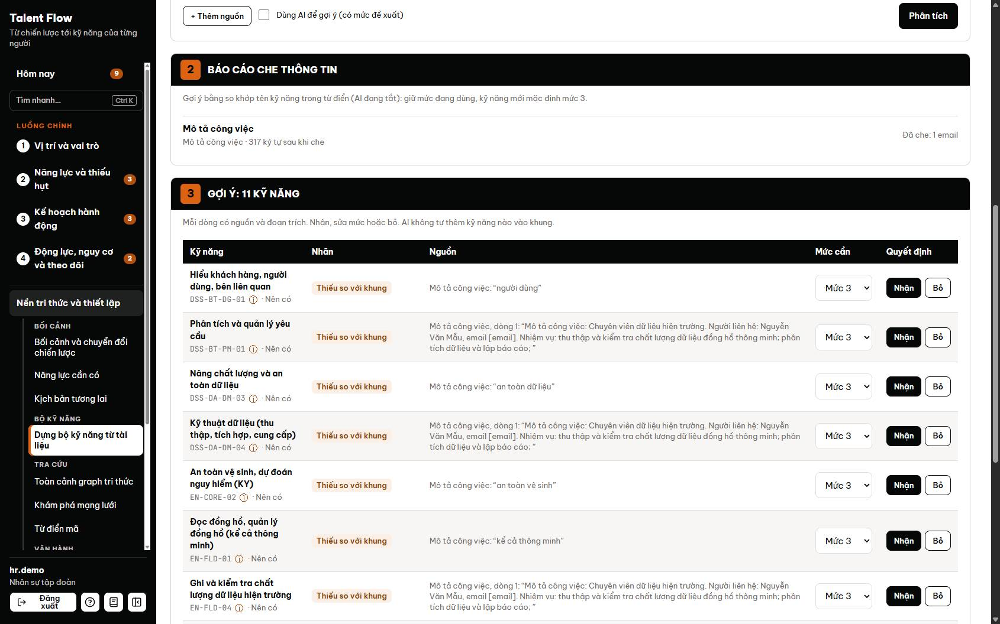

Mỗi phần hướng dẫn ghi đường dẫn trong menu dạng Nhóm → Trang, rồi các bước thao tác theo thứ tự. Nhãn Phase 1 hoặc Phase 2 cạnh tiêu đề cho biết tính năng mở ở phase triển khai nào. Ảnh minh họa chụp từ môi trường thử nghiệm với dữ liệu mẫu, giao diện tiếng Việt.
Giới thiệu
Workforce Graph là gì
Workforce Graph là nền tảng phát triển nghề nghiệp và thị trường nhân lực nội bộ dựa trên kỹ năng. Hệ thống nối chiến lược kinh doanh với kỹ năng của từng người để trả lời bốn câu hỏi:
- Tổ chức cần gì: chiến lược đòi hỏi năng lực nào, job nào, bao nhiêu người, vào lúc nào.
- Đang có gì: mỗi người có kỹ năng gì, ở mức nào, căn cứ vào bằng chứng nào.
- Còn thiếu gì: khoảng cách giữa cần và có, theo mức độ và thời gian.
- Nên làm gì: đào tạo, chuyển nội bộ, biệt phái, tuyển, hay giao việc thử; và theo dõi kết quả sau đó.
Hệ thống không thay thế hệ thống nhân sự, hệ thống đào tạo hay công cụ AI tạo sinh đang dùng. Nó là lớp nối giữa cầu (job) và cung (người).
Chuỗi sáu bước
Mọi việc trong hệ thống đi theo cùng một trình tự. Phần lớn chuỗi thuộc Phase 2; từ Phase 2, thanh sáu bước hiện ở trang Việc cần làm và ở sáu trang của chuỗi, cho biết bước nào đã đủ dữ liệu, bước nào còn việc chờ.
| Bước | Câu hỏi | Trang |
|---|---|---|
| 1. Bối cảnh | Thị trường và chiến lược đang thay đổi thế nào? | Bối cảnh và chuyển đổi chiến lược |
| 2. Năng lực | Chiến lược cần năng lực tổ chức nào, do job nào gánh? | Năng lực cần có |
| 3. Con người | Ai đang có kỹ năng gì? | Con người và kỹ năng |
| 4. Thiếu hụt | Thiếu gì, ở đâu, cần trong bao lâu? | Thiếu hụt |
| 5. Hành động | Lấp thiếu hụt bằng cách nào? | Kế hoạch hành động |
| 6. Theo dõi | Hành động có hiệu quả không? | Theo dõi tiến độ |
Khái niệm cần biết
| Thuật ngữ | Ý nghĩa |
|---|---|
| Chuyển đổi chiến lược | Một hướng thay đổi lớn của doanh nghiệp, ví dụ chuyển người từ đọc đồng hồ sang an toàn và dữ liệu. Mọi hành động phát triển phải nối được về một chuyển đổi. |
| Năng lực | Khả năng tổ chức cần có để thực hiện chuyển đổi, ví dụ quản trị dữ liệu toàn công ty. |
| Job và ngạch | Job là công việc (có mô tả và yêu cầu kỹ năng). Ngạch là bậc trong chế độ nhân sự mới từ 4/2026; mỗi ngạch của một job có thể có mức yêu cầu riêng. |
| Kỹ năng và mức | Kỹ năng lấy theo デジタルスキル標準 ver.2.0 và bộ kỹ năng ngành năng lượng. Mức chung từ 1 (Biết) tới 5 (Dẫn dắt); một số kỹ năng có thang riêng, ví dụ thang việc hiện trường 0–4. |
| Bằng chứng và độ tin cậy | Tự khai, đánh giá, chứng chỉ, dự án, xác nhận của cấp trên. Mỗi loại có trọng số; kỹ năng chỉ được tính là "có" khi độ tin cậy từ 0,5. |
| Thiếu hụt | Khoảng cách giữa mức cần và mức đang có, kèm lý do kinh doanh và thời gian cần lấp. |
| Hàng duyệt | Nơi người có thẩm quyền quyết định các đề xuất của hệ thống. Không đề xuất nào có hiệu lực trước khi được duyệt. |
| IDP | Kế hoạch phát triển cá nhân: các task học có giờ, hướng tới một job và ngạch mục tiêu, do cấp trên duyệt. |
| Hậu kiểm | Người duyệt xem bằng chứng nhân viên nộp và kết luận Đạt hoặc Trả lại. Chỉ task Đạt mới tính tiến độ. |
Nguyên tắc sử dụng dữ liệu
- Không quyết định tự động về con người: hệ thống và AI chỉ đề xuất; người có thẩm quyền quyết định và quyết định được ghi lại.
- Dữ liệu kỹ năng chỉ dùng cho phát triển và bố trí, không dùng để trừ điểm hay xếp hạng cắt giảm.
- Mức tự đánh giá không phải xếp hạng chính thức; nó là mốc để lập kế hoạch học.
- Họ tên và thông tin liên lạc được mã hóa và chỉ hiện với người có quyền; mọi lần xem đều được ghi nhật ký.
Năm tình huống sử dụng chính
Năm tình huống tạo giá trị lớn nhất trong giai đoạn thí điểm. Mỗi dòng ghi ai làm, đi qua những trang nào và đo kết quả bằng gì; các bước chi tiết ở phần hướng dẫn theo vai trò bên dưới.
| Tình huống | Ai làm | Các bước chính | Đo kết quả |
|---|---|---|---|
| 1. Chuyển người đọc đồng hồ sang an toàn và dữ liệu Đồng hồ thông minh thu hẹp việc đọc đồng hồ. |
Nhân sự, nhân viên, cấp trên, phòng nhận | Danh mục nhân sự (ghép nguồn → đích) → Nghề nghiệp và nguyện vọng → IDP → Tuyển dụng nội bộ → Người mới chuyển về | Số người chuyển vào mảng chiến lược; thời gian lấp vị trí bằng người nội bộ |
| 2. Giữ đủ người có chứng chỉ an toàn và truyền nghề Nhân lực an toàn già đi, khó tuyển. |
Nhân sự, cấp trên trung tâm an toàn | Việc cần làm (cảnh báo) → An toàn và kế thừa (mức tối thiểu, chứng chỉ sắp hết hạn, kế hoạch truyền nghề, đề cử kế thừa) → IDP lấy chứng chỉ | Số đơn vị dưới mức (mục tiêu 0); job an toàn chưa có người kế thừa (mục tiêu 0) |
| 3. Lập và thực hiện IDP theo ngạch mới Chế độ nhân sự mới từ 4/2026. |
Nhân viên, cấp trên | Kế hoạch phát triển (IDP): tự đánh giá → lập IDP → cấp trên duyệt → làm task, nộp bằng chứng → hậu kiểm → kỹ năng vào hồ sơ | Số IDP đã duyệt; tiến độ; tỷ lệ trả lại; % hồ sơ kỹ năng đủ |
| 4. Tuyển nội bộ cho mảng chiến lược Điện, quốc tế, công nghệ trung hòa carbon, dữ liệu. |
Người đăng tuyển, nhân viên, cấp trên phòng đi, nhân sự | Đăng cơ hội → nhân viên ứng tuyển ẩn danh → chọn vào vòng trong → phòng đi đồng ý hoặc hoãn → quyết định chuyển → kế hoạch 90 ngày | Số đơn; thời gian lấp vị trí; giữ chân sau 12 tháng |
| 5. Danh mục nhân sự động từ chiến lược Kế hoạch kinh doanh 2025–2027. |
Nhân sự, ban giám đốc, Văn phòng DX | Chuỗi chiến lược 1 → 6 (bối cảnh, năng lực, thiếu hụt, kế hoạch, theo dõi) → Kịch bản → Danh mục nhân sự → Toàn cảnh graph | Ban giám đốc dùng bản đồ cung – cầu; thiếu hụt bắt buộc đã có kế hoạch |
Năm tình huống nối với nhau: tình huống 5 xác định job nào thiếu và khi nào; tình huống 1 và 4 lấp bằng người nội bộ; tình huống 3 tạo năng lực và làm dữ liệu kỹ năng đáng tin; tình huống 2 là ràng buộc an toàn — không quyết định chuyển nào được làm đơn vị an toàn xuống dưới mức.
Bắt đầu
Vai trò và những gì bạn thấy
Menu bên trái chỉ hiện những trang vai trò của bạn được dùng. Nhân sự công ty con chỉ thấy người của công ty mình; ban giám đốc chỉ thấy số tổng hợp. Ma trận đầy đủ ở Phần 6.
| Vai trò | Dùng chính |
|---|---|
| Nhân viên | Lộ trình của tôi, Nghề nghiệp và nguyện vọng, Lên ngạch tiếp theo, Mentor nội bộ, Luyện phỏng vấn cùng AI, Kế hoạch phát triển (IDP), Tuyển dụng nội bộ, Theo dõi sau chuyển |
| Cấp trên trực tiếp | Việc cần làm của đơn vị, Nhóm của tôi, Ai làm được việc này, Duyệt IDP và hậu kiểm, phản hồi đơn tuyển nội bộ, checklist 90 ngày |
| Người đăng tuyển | Đăng cơ hội nội bộ, xem ứng viên không tên, chọn vào vòng trong |
| Nhân sự công ty | Như nhân sự tập đoàn, trong phạm vi công ty mình |
| Nhân sự tập đoàn | Toàn bộ chuỗi sáu bước, hàng duyệt, kiến trúc job, điều chuyển định kỳ, khung theo ngạch, Chỉ số PoC |
| Ban giám đốc | Danh mục nhân sự, An toàn và kế thừa, Chỉ số PoC (số tổng hợp) |
| Văn phòng DX | Từ điển kỹ năng DX, tab Nhân lực DX |
| Quản trị | Thiết lập dữ liệu, Quản trị, Nhịp vận hành |
Bố cục màn hình
- Menu bên trái nhóm theo phạm vi, như các hệ thống nhân sự lớn: Của tôi (hồ sơ, nghề nghiệp, IDP của chính bạn), Nhóm của tôi (cho cấp trên), Tổ chức (bốn nhóm con: Chuỗi chiến lược, Nhân lực, Phát triển và dịch chuyển, Tri thức) và Vận hành ở cuối. Bấm tên nhóm để thu gọn hoặc mở. Số màu cam là số việc đang chờ bạn.
- Tìm nhanh: bấm Ctrl K (máy Mac: ⌘ K) hoặc ô Tìm nhanh để tìm trang theo tên; nhân sự và cấp trên tìm được cả job, kỹ năng, năng lực. Chưa gõ thì hiện các trang vừa mở.
- Ghim: rê chuột vào một mục và bấm ☆ để đưa mục đó lên nhóm Đã ghim ở đầu menu. Nút có hình thu gọn bảng bên (cạnh nút Đăng xuất, dưới tên tài khoản) ẩn menu để có thêm chỗ cho nội dung; nút ☰ Menu ở góc trên mở lại.
- Góc trên bên phải: chuông thông báo và nút đổi ngôn ngữ.
- Dải màu cam ở đầu trang nhắc đây là môi trường thử nghiệm với dữ liệu mẫu.
- Nút có dấu hỏi dưới tên tài khoản mở lại phần giới thiệu nhanh cho vai trò của bạn.

Triển khai theo phase
Hệ thống được mở dần theo hai phase để mỗi người chỉ phải làm quen vài trang mỗi lần, và để dữ liệu kỹ năng đủ tin cậy trước khi dùng cho quyết định bố trí người.
| Phase | Gồm | Dữ liệu được làm đầy |
|---|---|---|
| Phase 1 · Hồ sơ kỹ năng và phát triển cá nhân | Lộ trình của tôi, Nghề nghiệp và nguyện vọng, IDP, Duyệt IDP và hậu kiểm, Con người và kỹ năng, Khám phá mạng lưới, An toàn và kế thừa, Chương trình phát triển, Kiến trúc job, Khung theo ngạch, Yêu cầu đính chính | Job và yêu cầu kỹ năng, mức tự đánh giá, bằng chứng đã hậu kiểm, job mục tiêu, chứng chỉ |
| Phase 2 · Chiến lược và dịch chuyển nội bộ | Bối cảnh, Năng lực cần có, Thiếu hụt, Kế hoạch hành động, Theo dõi tiến độ, Kịch bản, Rủi ro phụ thuộc, Danh mục nhân sự, Tuyển dụng nội bộ, Điều chuyển định kỳ, Theo dõi sau chuyển | Chuyển đổi chiến lược, năng lực, thiếu hụt, kết quả chuyển người |
| Vận hành (mọi phase) | Hàng duyệt, Chỉ số PoC, Nhịp vận hành, Dữ liệu và thiết lập, Quản trị | — |
- Trang của phase chưa mở vẫn nằm trong nhóm của nó nhưng mờ đi, có nhãn Sắp mở. Nhân viên và cấp trên chưa mở được; trang Việc cần làm cũng không đưa việc dẫn tới các trang này.
- Nhân sự và quản trị mở được trang của phase sau để chuẩn bị dữ liệu trước (ví dụ soạn bối cảnh và chuyển đổi chiến lược trong Phase 1); đầu trang có dòng nhắc trang chưa mở cho nhân viên.
- Chuyển phase do quản trị hệ thống đổi trong cấu hình của tổ chức; người dùng không phải cài đặt gì.


Đổi ngôn ngữ
- Bấm 日本語 hoặc VI ở góc trên bên phải. Lựa chọn được nhớ cho lần sau.
- Nhãn, nút, thông báo và dữ liệu có bản song ngữ (tên job, mô tả job, đơn vị, kỹ năng, phát hiện) đổi ngay theo ngôn ngữ đã chọn.
- Ở giao diện tiếng Việt, họ tên người Nhật hiện dạng chữ Latin (服部 悠斗 → Hattori Yuto). File xuất ra luôn giữ tên gốc.
Hệ thống không hiện câu nửa Việt nửa Nhật. Nội dung chưa có bản dịch (ví dụ ghi chú do người dùng tự nhập) được giữ nguyên như khi nhập.
Thông báo
Chuông ở góc trên báo IDP được duyệt hoặc từ chối, task Đạt hoặc bị trả lại, bằng chứng chờ hậu kiểm, IDP chờ duyệt. Bấm một thông báo để đi tới đúng trang; bấm Đánh dấu đã đọc để xoá số chưa đọc.
Đồng ý sử dụng dữ liệu
Lần đầu đăng nhập, hoặc khi tổ chức thêm bên được xem dữ liệu, một khung đồng ý hiện ở đầu trang với nội dung theo ngôn ngữ bạn chọn và danh sách ai được xem. Bấm Tôi đồng ý để tiếp tục. Muốn rút đồng ý, liên hệ bộ phận nhân sự.
Hướng dẫn cho nhân viên
1Xem hồ sơ kỹ năng của mìnhPhase 1
Đường dẫn: Lộ trình của tôi
- Xem danh sách kỹ năng, mức hiện tại và độ tin cậy của từng kỹ năng.
- Mở một kỹ năng để xem bằng chứng đứng sau: tự khai, đánh giá, chứng chỉ, dự án, xác nhận của cấp trên.
- Thấy thông tin sai: gửi yêu cầu đính chính. Yêu cầu vào hàng duyệt; bạn theo dõi kết quả ở Yêu cầu đính chính.

2Tìm job phù hợp và đặt nguyện vọngPhase 1
Đường dẫn: Nghề nghiệp và nguyện vọng
- Xem Mức đáp ứng job hiện tại và chứng chỉ đang có.
- Ở Job phù hợp trong toàn nhóm, đọc mô tả job, mức sẵn sàng (%), kỹ năng đã có và kỹ năng cần thêm. Dòng "N người đã đi đường này" cho biết đã có bao nhiêu người chuyển theo hướng này.
- Chọn tối đa 3 job mong muốn, chọn ai được xem nguyện vọng (chỉ nhân sự, hoặc cả cấp trên), bấm Lưu nguyện vọng.
- Với mỗi nguyện vọng, xem lộ trình học: khoá học, dự án nội bộ để thực hành, chứng chỉ nên lấy.

3Chuẩn bị buổi trao đổi nghề nghiệp (キャリア面談)Phase 1
- Ở cuối trang Nghề nghiệp và nguyện vọng, tạo bản chuẩn bị và chọn phần muốn chia sẻ với cấp trên (kỹ năng mới, job mong muốn, khoảng cách).
- Cấp trên chỉ thấy phần bạn chọn. Sau buổi trao đổi, cấp trên ghi kết quả và cam kết học tập.
4Lập kế hoạch phát triển cá nhân (IDP)Phase 1
Đường dẫn: Kế hoạch phát triển (IDP)
- Chọn ngạch hiện tại, job mục tiêu và ngạch mục tiêu. Ngạch có dấu ★ có bộ yêu cầu riêng; không có ★ thì dùng yêu cầu chung của job.
- Bấm Gợi ý từ hồ sơ để điền sẵn mức (chỉ điền khi hồ sơ có dữ liệu cho ít nhất một nửa số kỹ năng), rồi kiểm tra lại.
- Chấm mức hiện tại cho từng kỹ năng theo thang của kỹ năng đó; dưới mỗi lựa chọn có mô tả mức. Bấm Lưu nháp nếu cần làm tiếp sau.
- Bấm Hoàn tất và lập IDP khi đã chấm đủ (số trên nút cho biết đã chấm bao nhiêu). Hệ thống lập IDP và gửi cấp trên duyệt.
- Xem IDP: các task có giờ học, khoá gợi ý (nội bộ → miễn phí → có phí), mục Để sau (vượt quá 90 ngày) và Khoảng cách tham khảo (kỹ năng không học được qua khoá học).
Đánh giá lại hoặc đổi mục tiêu bao nhiêu lần cũng được. Mỗi lần tạo IDP mới chờ duyệt; task đã Đạt của cùng kỹ năng được giữ.
5Làm task và nộp bằng chứngPhase 1
- Sau khi IDP được duyệt (có thông báo), bấm Bắt đầu ở task muốn làm.
- Học hoặc thực hành theo task. Khoá có phí: bạn tự quyết có đăng ký hay không.
- Nộp bằng chứng: chọn file ảnh JPG/PNG hoặc PDF (tối đa 10 MB), hoặc dán đường link; thêm ghi chú cho người duyệt (không ghi thông tin cá nhân). Bấm Nộp bằng chứng.
- Theo dõi trạng thái: Chờ duyệt → Đạt, hoặc Bị trả lại kèm lý do (nộp lại được). Nếu AI đang bật, bạn thấy nhận xét sơ bộ; người duyệt vẫn là người kết luận.
- Khi task Đạt, trả lời câu hỏi độ khó (1–5) hoặc bấm Bỏ qua. Kỹ năng của task Đạt được ghi vào hồ sơ.

6Ứng tuyển nội bộPhase 2
Đường dẫn: Tuyển dụng nội bộ
- Ở tab Cơ hội đang mở, xem cơ hội tuyển nội bộ, dự án và việc làm thêm trong nhóm, cùng mức phù hợp của bạn với từng cơ hội.
- Bật Nhận gợi ý để hệ thống đưa cơ hội hợp với bạn lên đầu.
- Ứng tuyển. Đơn được ẩn danh: phòng tuyển chỉ thấy hồ sơ kỹ năng không tên, cấp trên hiện tại chỉ biết khi đơn được chọn vào vòng trong.
- Theo dõi ở tab Đơn của tôi. Đơn không được chọn có lý do và kỹ năng nên bổ sung; cấp trên không thấy đơn bị loại.

7Sau khi chuyển sang job mớiPhase 2
Đường dẫn: Theo dõi sau chuyển. Bạn thấy kế hoạch 90 ngày do cấp trên mới theo dõi. Khảo sát ngắn ở ngày 30, ngày 90 và tháng thứ 12 hiện ngay trên trang khi đến hạn; câu trả lời chỉ bạn và nhân sự xem.
8Lên ngạch tiếp theoPhase 1
Đường dẫn: Của tôi → Lên ngạch tiếp theo, hoặc thẻ “Để lên ngạch tiếp theo, tôi còn thiếu gì?” ở trang Nghề nghiệp và nguyện vọng.
- Trang so kỹ năng của bạn với yêu cầu của ngạch kế tiếp trong job hiện tại. Nếu có hai nhánh (ví dụ T-Leader và T-Expert), chọn nhánh ở ô Ngạch kế tiếp.
- Bảng khoảng cách chỉ tính kỹ năng Đã xác minh. Kỹ năng bạn tự khai đủ mức nhưng chưa có bằng chứng hiện lý do “chưa có bằng chứng xác minh”: cách nhanh nhất là làm task có bằng chứng trong IDP.
- Mỗi dòng có mức ưu tiên (bắt buộc ở ngạch này thì ưu tiên cao) và lý do. Kỹ năng không học qua khoá được sẽ ghi rõ cần giao việc thực tế hoặc thi chứng chỉ.
- Lộ trình gợi ý chia các khoảng cách thành ba giai đoạn trong thời gian một IDP. Bấm Lập kế hoạch phát triển để lập IDP chính thức; IDP vẫn cần cấp trên duyệt.
- Mentor nội bộ: đồng nghiệp đã tự đăng ký làm mentor và có kỹ năng Đã xác minh bạn đang cần. Bấm Mời trao đổi để gửi lời mời. Muốn làm mentor, đánh dấu Tôi sẵn sàng làm mentor nội bộ; bỏ đánh dấu bất cứ lúc nào.

Đã xác minh và Khai báo. Một kỹ năng là Đã xác minh khi có bài kiểm tra, chứng chỉ, cấp trên xác nhận hoặc sản phẩm đã được hậu kiểm. Kỹ năng chỉ có tự đánh giá là Khai báo. Nhãn này hiện ở hồ sơ, trang lên ngạch và khi cấp trên tìm người theo kỹ năng; cấp trên và nhân sự vẫn xem được mức tự đánh giá của bạn như trước.
9Khi job của bạn đổi yêu cầu kỹ năngPhase 1
Khi nhân sự kích hoạt phiên bản yêu cầu kỹ năng mới cho job của bạn (hoặc job mục tiêu của IDP đang chạy), bạn nhận thông báo “Job của bạn vừa đổi yêu cầu kỹ năng”. Đường dẫn: thông báo, hoặc thẻ “Job của tôi vừa đổi gì?” ở trang Nghề nghiệp và nguyện vọng.
- Trang liệt kê phần đổi ở ngạch của bạn: Kỹ năng mới, Đổi yêu cầu (mức cần, mức độ cần thiết), Không còn trong khung; kèm mức hiện tại của bạn.
- IDP đang chạy giữ nguyên. Kỹ năng không còn trong khung vẫn được tính vào tiến độ.
- Bấm Đề xuất thêm … hoạt động vào IDP để thêm hoạt động cho kỹ năng mới. Hoạt động hiện nhãn “Đề xuất, chờ duyệt”, chưa bắt đầu được và chưa tính vào tiến độ cho tới khi cấp trên duyệt.
10Báo quan tâm một cơ hộiPhase 2
Ở tab Cơ hội đang mở của Tuyển dụng nội bộ, bấm ☆ Quan tâm khi bạn muốn được liên hệ về cơ hội như vậy nhưng chưa muốn nộp đơn. Tín hiệu chỉ gửi tới nhân sự; cấp trên hiện tại và người đăng tuyển không được thông báo. Bấm lại để bỏ. Mức phù hợp hiện bằng chữ (cao, trung bình, thấp), không hiện phần trăm.
11Mentor nội bộPhase 1
Đường dẫn: Của tôi → Mentor nội bộ. Mentor là đồng nghiệp tự đăng ký; kỹ năng trên thẻ là kỹ năng Đã xác minh của họ.
- Gợi ý mentor theo kế hoạch của bạn: mentor có kỹ năng bạn còn thiếu ở ngạch kế tiếp hoặc trong IDP đang chạy. Lọc theo giai đoạn của kế hoạch. Phần Tất cả mentor tìm được theo tên, job, đơn vị, chủ đề, kỹ năng.
- Bấm Xem thông tin: tab Tổng quan có giới thiệu, kỹ năng nổi bật kèm mức, chủ đề có thể hỗ trợ và vì sao phù hợp với từng giai đoạn của bạn; tab Cảm nhận hiện đánh giá không tên của đồng nghiệp.
- Tab Đặt lịch: ghi chủ đề, chọn tối đa 2 kỳ vọng, thời gian mong muốn, hình thức; có thể cho mentor xem hồ sơ kỹ năng trong buổi đó (chỉ kỹ năng Đã xác minh, không gồm tự đánh giá). Kịch bản dự kiến hiện ngay để hai bên chuẩn bị. Mỗi người có số lượt hẹn giới hạn trong tháng.
- Lịch của tôi: theo dõi trạng thái (chờ phản hồi, đã nhận, đã hoàn thành, đã huỷ kèm lý do). Sau buổi hẹn, bấm hoàn thành và gửi cảm nhận 1–5 sao.
- Muốn làm mentor: Hồ sơ mentor của tôi → bật đăng ký, ghi giới thiệu, chủ đề, hình thức, số lượt nhận mỗi tháng. Yêu cầu tới bạn nằm ở tab “Đồng nghiệp đặt với tôi”: nhận (ghi địa điểm hoặc link) hoặc từ chối kèm lý do.

12Luyện phỏng vấn cùng AIPhase 1
Đường dẫn: Của tôi → Luyện phỏng vấn cùng AI. Thực hành trả lời phỏng vấn trước khi ứng tuyển nội bộ, lên ngạch hoặc trao đổi với cấp trên. Chỉ bạn xem được các buổi luyện; kết quả không vào hồ sơ kỹ năng và không phải đánh giá chính thức.
- Luyện tập theo kế hoạch phát triển: buổi gợi ý từ từng giai đoạn lên ngạch tiếp theo và job mục tiêu của IDP đang chạy. Bấm Bắt đầu luyện để tạo buổi 15 phút; buổi đã luyện hiện Xem chi tiết.
- Muốn luyện cho vị trí khác: bấm + Bắt đầu luyện tập ở phần Lịch sử luyện tập. Chọn Job nội bộ (kèm ngạch mục tiêu nếu muốn) hoặc một Cơ hội tuyển nội bộ đang mở; chọn trọng tâm (cân bằng, bám mô tả job, hoặc bám kỹ năng bạn còn thiếu), ngôn ngữ, thời lượng 10/15/20 phút và ghi yêu cầu bổ sung nếu có. Mô tả công việc lấy từ kiến trúc job, bạn không cần dán.
- Trong buổi luyện: trả lời từng câu bằng chữ như đang nói với người phỏng vấn (bối cảnh, việc bạn làm, kết quả). Bấm Lưu hoặc chuyển câu; các vòng tròn bên trái cho biết câu nào đã trả lời. Không ghi họ tên, số điện thoại hay thông tin cá nhân: phần này bị che trước khi lưu.
- Bấm Kết thúc và xem nhận xét (hoặc Kết thúc sớm). Mỗi câu có điểm 1–5 theo bốn tiêu chí: chuyên môn, ví dụ cụ thể, mạch lạc, phù hợp job; kèm điểm mạnh, điều cần cải thiện và dàn ý gợi ý. Phần Tổng kết có điểm chung và các kỹ năng nên luyện thêm, nối sang kế hoạch phát triển.


Khi AI chưa bật. Trang ghi “AI chưa được bật cho tổ chức”: câu hỏi và nhận xét sinh theo quy tắc từ kỹ năng, mức và nhiệm vụ của job. Khi tổ chức bật AI, câu hỏi và nhận xét do AI tạo; họ tên và mã nhân viên của bạn không được gửi đi. Mỗi người có số buổi luyện giới hạn trong tháng.
Hướng dẫn cho cấp trên và người đăng tuyển
1Việc cần làm của đơn vị
Trang Việc cần làm gom việc của đơn vị bạn: IDP cần duyệt, bằng chứng cần hậu kiểm, đơn tuyển nội bộ cần phản hồi, mốc kế hoạch 90 ngày. Mỗi dòng có nút đi thẳng tới chỗ xử lý.
2Xem kỹ năng của nhóm và ghi nhận bằng chứngPhase 1
Đường dẫn: Nhóm của tôi → Kỹ năng của nhóm.
- Mỗi ô là một người; ô viền cam là người còn ít hơn 5 kỹ năng đã xác nhận. Bấm để mở hồ sơ.
- Ghi nhận kỹ năng thể hiện qua công việc, dự án, chứng chỉ của cấp dưới. Bằng chứng của cấp trên có trọng số cao hơn tự khai.
3Duyệt IDPPhase 1
Đường dẫn: Duyệt IDP và hậu kiểm, phần A.
- Xem mục tiêu, danh sách task, giờ học so với ngân sách và các khoảng cách không học được qua khoá học.
- Bấm Xem chi tiết để mở IDP đầy đủ của nhân viên.
- Bấm Duyệt IDP, hoặc Từ chối kèm lý do. Nhân viên nhận thông báo.
4Hậu kiểm bằng chứngPhase 1
Đường dẫn: Duyệt IDP và hậu kiểm, phần B.
- Mở file hoặc link bằng chứng, đọc yêu cầu bằng chứng của task, ghi chú của nhân viên và nhận xét sơ bộ của AI (nếu có). Khung Tiêu chí của mức ngay dưới cho biết mức cần đạt nghĩa là gì; đối chiếu bằng chứng với tiêu chí này.
- Bấm Đạt, hoặc Trả lại kèm lý do để nhân viên bổ sung.
- Xử lý trong 5 ngày làm việc; bằng chứng quá hạn được đánh dấu đỏ và báo cho nhân sự.

5Phản hồi đơn tuyển nội bộ của cấp dướiPhase 2
- Bạn chỉ được báo khi đơn của cấp dưới đã vào vòng trong và được nhân sự xác nhận.
- Trong 14 ngày, chọn Đồng ý, hoặc đề nghị hoãn một lần, có lý do, tối đa 90 ngày. Bạn không có quyền từ chối.
- Xem gợi ý bù người để chuẩn bị cho đơn vị trước khi người chuyển đi.
6Đăng cơ hội nội bộ và chọn ứng viên (người đăng tuyển)Phase 2
- Ở Tuyển dụng nội bộ, tab Cơ hội tôi đăng, bấm Đăng cơ hội mới: chọn loại (tuyển nội bộ, dự án, làm thêm), job, đơn vị, mô tả và kỹ năng cần. Cơ hội được nhân sự duyệt trước khi đăng.
- Xem ứng viên xếp theo mức phù hợp, chỉ có hồ sơ kỹ năng không tên.
- Chọn ứng viên vào vòng trong (lúc này mới thấy tên), rồi chọn người được chọn. Loại đơn phải ghi lý do; lý do được gửi cho ứng viên.
7Hỗ trợ người mới chuyển về đơn vịPhase 2
Đường dẫn: Theo dõi sau chuyển. Đánh dấu checklist 90 ngày (chào đón, người hướng dẫn, mục tiêu, đào tạo, hướng dẫn an toàn) và các mốc 30/60/90 ngày.

8Ai làm được việc này?Phase 1
Đường dẫn: Nhóm của tôi → Ai làm được việc này? Tìm người trong đơn vị bạn phụ trách theo bộ kỹ năng.
- Gõ câu hỏi thường ngày (ví dụ “ai quản lý đồng hồ thông minh và kiểm tra chất lượng dữ liệu hiện trường được?”) rồi bấm Hỏi. Hệ thống tìm tên kỹ năng trong câu hỏi; bạn thêm, bỏ kỹ năng hoặc đổi mức cần rồi bấm Tìm lại theo kỹ năng đã chọn.
- Kết quả chia ba nhóm: Làm được ngay (đủ mọi kỹ năng ở mức cần, đều Đã xác minh), Thiếu một kỹ năng (kèm kỹ năng còn thiếu và đã có trong IDP chưa), Chưa đủ dữ liệu (mới ở mức Khai báo: chỉ đếm, không hiện tên).
- Đây là gợi ý để trao đổi, không phải quyết định giao việc. Mỗi lần tìm được ghi nhật ký.

9Duyệt hoạt động đề xuất thêm vào IDPPhase 1
Đường dẫn: Duyệt IDP và hậu kiểm, phần C. Khi job đổi yêu cầu kỹ năng, nhân viên đề xuất hoạt động cho kỹ năng mới vào IDP đang chạy. Bấm Duyệt hoạt động để hoạt động thành task thường và được tính tiến độ, hoặc Không duyệt kèm lý do. Bạn không duyệt được hoạt động của chính mình.
10Dashboard đơn vịPhase 1
Đường dẫn: Tổ chức → Phát triển và dịch chuyển → Chương trình phát triển, phần Dashboard đơn vị. Chỉ có số tổng hợp: số người trong phạm vi, số người đã có kế hoạch, bằng chứng chờ xác minh, tỷ lệ yêu cầu kỹ năng đã xác minh; kỹ năng yêu cầu chưa xác minh đủ; khoảng cách trong IDP chia theo nguồn (lên ngạch hay job vừa đổi) và số đã đạt trong quý.

Hướng dẫn cho nhân sự
1Nạp và cập nhật dữ liệu
Đường dẫn: Vận hành → Dữ liệu và thiết lập (trang Dữ liệu và thiết lập).
- Làm lần lượt 6 bước: Từ điển kỹ năng và vai trò, Danh sách nhân viên, Bằng chứng kỹ năng, Bối cảnh, Năng lực, Mục tiêu và kế thừa.
- Ở mỗi bước, bấm Tải file mẫu, điền dữ liệu vào các sheet.
- Chạy Kiểm tra trước để xem lỗi theo từng dòng mà chưa ghi dữ liệu, sửa file, rồi nạp.
- Bước đã đủ có dấu ✓; bước cần làm tiếp được tô cam.

2Bối cảnh, chuyển đổi chiến lược và năng lựcPhase 2
- Tổ chức → Chuỗi chiến lược → 1 · Bối cảnh và chuyển đổi chiến lược: xem phát hiện theo 3 tiêu chí × 3 thời điểm và các chuyển đổi chiến lược (bản đồ, luồng căn cứ, bảng 3×3).
- Năng lực cần có: xem mỗi chuyển đổi cần năng lực nào, năng lực do job nào gánh và cần kỹ năng gì.
- Kịch bản tương lai: so sánh nhu cầu năng lực theo các kịch bản.

3Kiến trúc job: tên, mô tả và yêu cầu kỹ năngPhase 1
Đường dẫn: Kiến trúc job, tab Job.
- Chọn job ở danh sách bên trái (mỗi job có đoạn trích mô tả).
- Sửa tên job và mô tả job: mỗi thứ có hai ô, một ô bản gốc (ngôn ngữ dữ liệu của tổ chức, với Toho là tiếng Nhật) và một ô bản dịch. Mỗi ô chỉ ghi một ngôn ngữ. Thiếu bản dịch thì người dùng ngôn ngữ kia thấy bản gốc.
- Chọn công ty, bậc vai trò, loại job, trạng thái, phân khúc; bấm Lưu job.
- Ở Yêu cầu kỹ năng, thêm hoặc bỏ kỹ năng, chọn mức và loại Bắt buộc / Nên có / Có thì tốt; bấm Lưu yêu cầu.
- Ở Đề xuất kỹ năng từ mô tả job, mô tả đã lưu được điền sẵn; bấm Đề xuất kỹ năng, rồi Chấp nhận từng đề xuất phù hợp. Không có gì được lưu tới khi bạn chấp nhận và lưu yêu cầu.

4Khung năng lực theo ngạchPhase 1
Đường dẫn: Khung theo ngạch.
- Xem các thang mức (ví dụ thang việc hiện trường 0–4, thang kinh nghiệm kèm cặp 0–4).
- Chọn job, chọn ngạch để xem mức yêu cầu, trọng số, kỹ năng có học được qua khoá học không.
- Đổi khung: bấm Tải template, điền một dòng cho mỗi ngạch × kỹ năng, đặt tên phiên bản, bấm Tải lên và so sánh.
- Đọc báo cáo ảnh hưởng: mục thêm, bỏ, đổi; số người và số IDP bị ảnh hưởng.
- Ghi người xác nhận phía tổ chức và ngày xác nhận, bấm Kích hoạt; hoặc Huỷ bản nháp. Bản cũ được lưu lại, không ghi đè.
5Hàng duyệt
Đường dẫn: Vận hành → Hàng duyệt.
- Chọn tab: Thiếu hụt, Hành động phát triển, Cơ hội nội bộ, Đề cử người kế thừa, Yêu cầu đính chính, Bằng chứng do AI trích xuất.
- Với thiếu hụt, bấm một ô của ma trận "Việc chờ dồn ở đâu" để lọc; nên duyệt ô Bắt buộc · 0–12 tháng trước.
- Chọn từng mục hoặc Chọn tất cả các mục đang lọc, bấm Duyệt, hoặc ghi lý do và bấm Từ chối.

6Thiếu hụt và kế hoạch hành độngPhase 2
- Tổ chức → Chuỗi chiến lược → 4 · Thiếu hụt: xem thiếu hụt theo mức độ × thời gian cần; bấm Lý do để xem căn cứ kinh doanh.
- Kế hoạch hành động: mỗi cột là một trạng thái. Kéo thẻ sang cột kế tiếp hoặc bấm nút trên thẻ để cập nhật; hành động ở cột Chờ duyệt cần nhân sự duyệt trước.
- Theo dõi tiến độ: dòng chảy thiếu hụt, sức khỏe dữ liệu, thiếu hụt đang mở theo thời gian cần lấp.

7Danh mục nhân sự và công bố vốn con ngườiPhase 2
Đường dẫn: Tổ chức → Nhân lực → Danh mục nhân sự. Tab Cung – cầu theo job, công ty, giai đoạn và kịch bản; Nhân lực DX đếm theo kỹ năng thực; Công bố vốn con người có 23 chỉ số xuất ra file; Nhu cầu để nhập nhu cầu nhân lực.

8An toàn và kế thừaPhase 1
Đường dẫn: An toàn và kế thừa. Xem số người có chứng chỉ theo đơn vị so với mức tối thiểu (theo luật và chuẩn nội bộ), nhìn trước tới 180 ngày, chứng chỉ sắp hết hạn và kế hoạch truyền nghề. Khi một quyết định chuyển người làm đơn vị xuống dưới mức, hệ thống chặn; chỉ vượt được khi ghi lý do và phương án bù.

9Tuyển dụng nội bộ: duyệt và quyết địnhPhase 2
- Duyệt cơ hội mới ở Hàng duyệt, tab Cơ hội nội bộ.
- Khi phòng tuyển đã chọn người, xác nhận đơn; hệ thống báo cấp trên phòng đi.
- Sau khi cấp trên phòng đi đồng ý, hoãn, hoặc hết 14 ngày không phản hồi, quyết định chuyển. Ngày chuyển mặc định sau 60 ngày, hoặc theo ngày hoãn đã thống nhất. Người chuyển tự có kế hoạch 90 ngày.
10Điều chuyển định kỳ và biệt pháiPhase 2
Đường dẫn: Điều chuyển định kỳ.
- Nhập tên đợt và ngày áp dụng, bấm Tạo đợt.
- Với mỗi vị trí cần người, xem ứng viên xếp theo mức phù hợp và cảnh báo an toàn; lập phương án.
- Bấm Duyệt phương án, rồi Xuất file cho hệ thống nhân sự.
- Theo dõi người đang biệt phái và số ngày còn lại ở bảng Biệt phái đang có.
11Chương trình phát triển và Chỉ số PoC
- Chương trình phát triển: số người có IDP theo trạng thái, tiến độ trung bình, task chờ duyệt, hậu kiểm quá hạn, tỷ lệ AI đạt sơ bộ, tỷ lệ bị trả lại; lọc theo trạng thái và bấm Xuất Excel.
- Chỉ số hiệu quả: mức sử dụng (% nhân viên dùng trang nghề nghiệp, tài khoản hoạt động, xu hướng 8 tuần), thời gian lấp vị trí bằng người nội bộ, tỷ lệ chấp nhận gợi ý AI so với mục tiêu 80%. Chỉ có số tổng hợp.

12Dựng bộ kỹ năng từ tài liệuPhase 1
Đường dẫn: Tổ chức → Tri thức → Dựng bộ kỹ năng từ tài liệu. Dành cho nhân sự tập đoàn và quản trị.
- Nạp nguồn. Chọn job và ngạch, rồi dán văn bản hoặc chọn file .txt, .md, .csv: mô tả công việc, phân tích công việc, nhóm job, mẫu ticket. Có thể thêm tối đa 8 nguồn.
- Bấm Phân tích. Email, số điện thoại, đường dẫn, @tên và cột tên người trong file ticket được che trước khi phân tích; Báo cáo che thông tin cho biết đã che gì. Tên người viết tự do trong văn bản không phát hiện chắc chắn được: hãy tự rà trước khi nạp.
- Gợi ý. Mỗi kỹ năng có nguồn, số dòng và đoạn trích, cùng nhãn: Thiếu so với khung, Đổi mức, Đã có trong khung, Không thấy trong tài liệu, và Kỹ năng mới nổi nếu từ điển đánh dấu như vậy. Khi AI tắt, hệ thống so tên kỹ năng trong từ điển và giữ mức đang dùng.
- Chọn. Bấm Nhận hoặc Bỏ từng dòng, sửa mức cần nếu cần. Dòng “Không thấy trong tài liệu” mặc định chưa nhận: bạn tự quyết giữ hay bỏ.
- Tạo bản nháp. Đặt tên phiên bản và bấm Tạo bản nháp. Yêu cầu của các ngạch khác của job giữ nguyên. Mở Khung theo ngạch để xem báo cáo ảnh hưởng và kích hoạt sau khi người phía tổ chức xác nhận; khi kích hoạt, người giữ job và người có IDP nhắm job đó nhận thông báo.

Nhân sự cũng dùng được Tổ chức → Nhân lực → Ai làm được việc này? trong phạm vi của mình (nhân sự công ty: trong công ty), và xem danh sách nhân viên báo quan tâm ở tab Tất cả của Tuyển dụng nội bộ.
13Ban giám đốc và Văn phòng DX
- Ban giám đốc: Danh mục nhân sự, An toàn và kế thừa, Chỉ số hiệu quả. Mọi số liệu ở dạng tổng hợp, không xem dữ liệu từng người.
- Văn phòng DX: Kiến trúc job cho kỹ năng DX và tab Nhân lực DX ở Danh mục nhân sự.
14Quản trị
Đường dẫn: Quản trị.
- Nhập file CSV / XLSX từng loại dữ liệu (nâng cao), với nút Kiểm tra trước khi nhập; Lịch sử nhập.
- Kiểm tra chất lượng dữ liệu và chạy ngay các tác vụ nền.
- Đồng ý theo mục đích: xem và thu hồi đồng ý của nhân viên.
- Người dùng: danh sách và Tạo tài khoản mới theo vai trò.
Trang Nhịp vận hành cho biết các tác vụ định kỳ đã chạy lúc nào và kết quả.
Vai trò, luồng vận hành và phân quyền
Phần này dành cho nhân sự, quản trị và người phụ trách dự án: ai làm gì, việc đi qua những ai, và mỗi vai trò thấy được gì. Quyền được chặn ở máy chủ, không chỉ ẩn trên màn hình: mở một trang hoặc thao tác ngoài quyền sẽ nhận thông báo "không có quyền".
Tám vai trò
| Vai trò | Ai | Thấy dữ liệu của | Không được |
|---|---|---|---|
| Nhân viên | Mọi nhân viên có tài khoản | Chính mình | Xem hồ sơ người khác |
| Cấp trên | Trưởng nhóm, trưởng phòng | Đơn vị mình phụ trách và đơn vị con | Tự duyệt hoặc tự ghi nhận cho chính mình; xem nguyện vọng khi nhân viên không cho phép; thấy đơn tuyển nội bộ của người trong đơn vị trước khi nhân sự xác nhận |
| Người đăng tuyển | Phòng cần người | Cơ hội mình đăng và ứng viên (không tên ở vòng sơ loại) | Đăng cơ hội cho đơn vị khác; duyệt chuyển người |
| Nhân sự công ty | Nhân sự của từng công ty trong tập đoàn | Mọi đơn vị của công ty mình | Xem hoặc đề xuất người ngoài công ty mình; quản lý phiên bản khung |
| Nhân sự tập đoàn | Phòng nhân sự công ty mẹ | Toàn tập đoàn | Quyết định không qua hàng duyệt |
| Ban giám đốc | Lãnh đạo | Số tổng hợp; ô dưới 5 người bị ẩn | Xem hồ sơ cá nhân |
| Văn phòng DX | Văn phòng thúc đẩy DX | Số tổng hợp; từ điển kỹ năng DX, kiến trúc job | Xem hồ sơ cá nhân |
| Quản trị | Bộ phận vận hành hệ thống | Tài khoản, dữ liệu nạp, tác vụ | Xem hồ sơ cá nhân |
Nguyên tắc phân quyền
- Người quyết định, hệ thống gợi ý. Thiếu hụt, hành động, IDP, kế thừa, chuyển người đều qua một bước duyệt có tên người duyệt.
- Không tự duyệt cho mình. Cấp trên không duyệt IDP, không ghi bằng chứng, không ghi kết quả phỏng vấn của chính mình.
- Nhân viên làm chủ dữ liệu của mình: tự khai kỹ năng, chọn job mục tiêu, gửi yêu cầu đính chính, ứng tuyển và rút đơn.
- Nguyện vọng nghề nghiệp chỉ bản thân và nhân sự thấy; cấp trên thấy khi nhân viên cho phép.
- Đơn tuyển nội bộ được giữ kín với phòng hiện tại cho tới khi nhân sự xác nhận.
- Lãnh đạo xem số tổng hợp; ô có 1–4 người bị ẩn để không lần ra cá nhân.
- An toàn là ràng buộc cứng: quyết định làm đơn vị an toàn xuống dưới mức bị chặn; chỉ nhân sự được vượt, kèm lý do và phương án bù người.
- Mọi thao tác ghi đều có nhật ký: ai, vai trò gì, làm gì, lúc nào.
Luồng vận hành chính
Mỗi dòng là một luồng; mũi tên là thứ tự, trong ngoặc là vai trò làm bước đó.
| Luồng | Các bước và người làm |
|---|---|
| Khởi tạo dữ liệu | Tạo tài khoản, gán vai trò và đơn vị (quản trị) → nạp tổ chức, nhân viên, job, kỹ năng (quản trị, nhân sự) → mô tả job và yêu cầu kỹ năng (nhân sự tập đoàn) → đăng nội dung đồng ý, phiên bản khung (quản trị, nhân sự tập đoàn) → chạy tác vụ định kỳ (quản trị, nhân sự) |
| Chuỗi chiến lược | Bối cảnh, chuyển đổi chiến lược (nhân sự) → năng lực cần có (nhân sự) → so khớp kỹ năng (hệ thống) → sinh thiếu hụt và duyệt (nhân sự) → hành động (nhân sự, cấp trên) → theo dõi (nhân sự; ban giám đốc xem tổng hợp) |
| IDP | Tự đánh giá, lập IDP (nhân viên) → duyệt hoặc trả lại (cấp trên trực tiếp, nhân sự) → làm task, nộp bằng chứng (nhân viên) → hậu kiểm (cấp trên, nhân sự) → kỹ năng vào hồ sơ (hệ thống) |
| Tuyển dụng nội bộ | Đăng cơ hội (người đăng tuyển, cấp trên, nhân sự) → ứng tuyển (nhân viên) → vòng trong, chọn (người đăng tuyển) → xác nhận và kiểm an toàn (nhân sự) → đồng ý hoặc hoãn (cấp trên phòng đi, có hạn phản hồi) → duyệt chuyển (nhân sự) → kế hoạch 90 ngày (cấp trên mới) → khảo sát (người đã chuyển). Loại đơn: người đăng tuyển ở hai bước đầu, nhân sự từ bước xác nhận; luôn ghi lý do gửi ứng viên. |
| Điều chuyển định kỳ | Lập đợt (nhân sự) → thêm đề xuất (nhân sự; nhân sự công ty trong công ty mình) → cảnh báo chặn: an toàn, trùng vị trí, biệt phái (hệ thống) → duyệt biệt phái (nhân sự cả hai công ty) → duyệt đợt (nhân sự) → ghi nhận đã thực hiện, tạo kế hoạch 90 ngày (nhân sự) |
| An toàn và kế thừa | Cảnh báo dưới mức, chứng chỉ sắp hết hạn (hệ thống) → kế hoạch truyền nghề, đề cử kế thừa (nhân sự, cấp trên trong phạm vi) → vượt cảnh báo khi cần (chỉ nhân sự, có lý do) |
| Nguyện vọng và phỏng vấn | Chọn job mong muốn và mức chia sẻ (nhân viên) → chuẩn bị nội dung (nhân viên) → ghi kết quả và cam kết (cấp trên trực tiếp, nhân sự) → đánh dấu cam kết đã làm (cả ba) |
Ma trận phân quyền theo trang
✓ dùng được trong phạm vi của vai trò · Σ chỉ số tổng hợp · — không có trong menu. Nhân sự công ty có cùng trang với nhân sự tập đoàn nhưng chỉ thấy dữ liệu công ty mình. Trang thuộc Phase 2 hiện mờ cho tới khi mở phase.
| Trang | Nhân viên | Cấp trên | Người đăng tuyển | Nhân sự công ty | Nhân sự tập đoàn | Ban giám đốc | Văn phòng DX | Quản trị |
|---|---|---|---|---|---|---|---|---|
| Việc cần làm | ✓ | ✓ | ✓ | ✓ | ✓ | — | — | — |
| Lộ trình của tôi · Của tôi | ✓ | ✓ | — | — | — | — | — | — |
| Nghề nghiệp và nguyện vọng · Của tôi | ✓ | ✓ | ✓ | — | — | — | — | — |
| Lên ngạch tiếp theo · Của tôi | ✓ | ✓ | ✓ | — | — | — | — | — |
| Mentor nội bộ · Của tôi | ✓ | ✓ | ✓ | — | — | — | — | — |
| Kế hoạch phát triển (IDP) · Của tôi | ✓ | ✓ | ✓ | — | — | — | — | — |
| Tuyển dụng nội bộ · Của tôi | ✓ | — | — | — | — | — | — | — |
| Theo dõi sau chuyển · Của tôi | ✓ | — | — | — | — | — | — | — |
| Yêu cầu đính chính · Của tôi | ✓ | — | — | — | — | — | — | — |
| Kỹ năng của nhóm · Nhóm của tôi | — | ✓ | — | — | — | — | — | — |
| Ai làm được việc này? · Nhóm của tôi | — | ✓ | — | — | — | — | — | — |
| Duyệt IDP và hậu kiểm · Nhóm của tôi | — | ✓ | — | — | — | — | — | — |
| Cơ hội và đơn ứng tuyển · Nhóm của tôi | — | ✓ | ✓ | — | — | — | — | — |
| Người mới chuyển về · Nhóm của tôi | — | ✓ | ✓ | — | — | — | — | — |
| An toàn của đơn vị · Nhóm của tôi | — | ✓ | — | — | — | — | — | — |
| 1 · Bối cảnh và chuyển đổi chiến lược · Chuỗi chiến lược | — | ✓ | — | ✓ | ✓ | — | — | — |
| 2 · Năng lực cần có · Chuỗi chiến lược | — | ✓ | — | ✓ | ✓ | — | — | — |
| 3 · Con người và kỹ năng · Chuỗi chiến lược | — | — | — | ✓ | ✓ | — | — | — |
| 4 · Thiếu hụt · Chuỗi chiến lược | — | ✓ | — | ✓ | ✓ | — | — | — |
| 5 · Kế hoạch hành động · Chuỗi chiến lược | — | ✓ | — | ✓ | ✓ | — | — | — |
| 6 · Theo dõi tiến độ · Chuỗi chiến lược | — | — | — | ✓ | ✓ | — | — | — |
| Ai làm được việc này? · Nhân lực | — | — | — | ✓ | ✓ | — | — | — |
| Danh mục nhân sự · Nhân lực | — | — | — | ✓ | ✓ | Σ | Σ | ✓ |
| Kịch bản tương lai · Nhân lực | — | — | — | ✓ | ✓ | — | — | — |
| Rủi ro phụ thuộc · Nhân lực | — | — | — | ✓ | ✓ | — | — | — |
| An toàn và kế thừa · Nhân lực | — | — | — | ✓ | ✓ | Σ | — | — |
| Chương trình phát triển · Phát triển và dịch chuyển | — | ✓ | — | ✓ | ✓ | — | — | ✓ |
| Duyệt IDP và hậu kiểm · Phát triển và dịch chuyển | — | — | — | ✓ | ✓ | — | — | — |
| Tuyển dụng nội bộ · Phát triển và dịch chuyển | — | — | — | ✓ | ✓ | — | — | — |
| Điều chuyển định kỳ · Phát triển và dịch chuyển | — | — | — | ✓ | ✓ | — | — | — |
| Theo dõi sau chuyển · Phát triển và dịch chuyển | — | — | — | ✓ | ✓ | Σ | — | — |
| Toàn cảnh graph tri thức · Tri thức | — | — | — | ✓ | ✓ | ✓ | ✓ | ✓ |
| Khám phá mạng lưới · Tri thức | — | ✓ | — | ✓ | ✓ | — | — | — |
| Kiến trúc job · Tri thức | — | — | — | ✓ | ✓ | — | ✓ | ✓ |
| Khung theo ngạch · Tri thức | — | — | — | ✓ | ✓ | — | — | ✓ |
| Dựng bộ kỹ năng từ tài liệu · Tri thức | — | — | — | — | ✓ | — | — | ✓ |
| Hàng duyệt · Vận hành | — | — | — | ✓ | ✓ | — | — | — |
| Chỉ số hiệu quả · Vận hành | — | — | — | ✓ | ✓ | Σ | — | ✓ |
| Nhịp vận hành · Vận hành | — | — | — | ✓ | ✓ | — | — | ✓ |
| Dữ liệu và thiết lập · Vận hành | — | — | — | ✓ | ✓ | — | — | ✓ |
| Quản trị hệ thống · Vận hành | — | — | — | ✓ | ✓ | — | — | ✓ |
Ma trận phân quyền theo thao tác
✓ được · P trong phạm vi (đơn vị mình phụ trách, hoặc công ty mình) · M chỉ cho chính mình · Σ số tổng hợp · — không.
| Thao tác | Nhân viên | Cấp trên | Người đăng tuyển | Nhân sự công ty | Nhân sự tập đoàn | Ban giám đốc | Văn phòng DX | Quản trị |
|---|---|---|---|---|---|---|---|---|
| Xem hồ sơ kỹ năng cá nhân | M | P | — | P | ✓ | — | — | — |
| Ghi bằng chứng kỹ năng cho nhân viên | — | P¹ | — | P | ✓ | — | — | — |
| Lập IDP, nộp bằng chứng task | M | M | M | — | — | — | — | — |
| Duyệt IDP, hậu kiểm bằng chứng | — | P¹ | — | P | ✓ | — | — | — |
| Ghi bối cảnh, chuyển đổi chiến lược; sinh thiếu hụt | — | — | — | ✓ | ✓ | — | — | — |
| Duyệt ở hàng duyệt chung | — | — | — | P | ✓ | — | — | — |
| Tạo hành động cho thiếu hụt đã duyệt | — | P | — | P | ✓ | — | — | — |
| Sửa kiến trúc job | — | — | — | P² | ✓ | — | — | ✓ |
| Xem nguyện vọng của nhân viên | M | P³ | — | P | ✓ | — | — | — |
| Ghi kết quả phỏng vấn nghề nghiệp | — | P¹ | — | P | ✓ | — | — | — |
| Đăng cơ hội nội bộ | — | P | P | ✓ | ✓ | — | — | — |
| Ứng tuyển, rút đơn | M | M | M | — | — | — | — | — |
| Chọn vào vòng trong, chọn ứng viên | — | P⁴ | P⁴ | ✓ | ✓ | — | — | — |
| Xác nhận và duyệt chuyển người | — | — | — | ✓ | ✓ | — | — | — |
| Phản hồi của phòng đi (đồng ý, hoãn) | — | P | — | — | — | — | — | — |
| Lập đợt và đề xuất điều chuyển | — | — | — | P | ✓ | — | — | — |
| Vượt cảnh báo an toàn (có lý do, phương án bù) | — | — | — | ✓ | ✓ | — | — | — |
| Cập nhật kế hoạch 90 ngày | — | P | P | P | ✓ | — | — | — |
| Xem danh mục nhân sự, chỉ số | — | — | — | ✓ | ✓ | Σ | Σ | ✓ |
| Nạp dữ liệu, chạy tác vụ | — | — | — | ✓ | ✓ | — | — | ✓ |
| Tìm người theo bộ kỹ năng (Ai làm được việc này) | — | P | — | P | ✓ | — | — | — |
| Đề xuất hoạt động vào IDP khi khung job đổi | M | M | M | — | — | — | — | — |
| Duyệt hoạt động đề xuất | — | P¹ | — | P | ✓ | — | — | — |
| Bấm “Quan tâm” cơ hội nội bộ | M | M | M | — | — | — | — | — |
| Xem danh sách quan tâm | — | — | — | P | ✓ | — | — | — |
| Đăng ký làm mentor, đặt lịch với mentor | M | M | M | — | — | — | — | — |
| Nhận, từ chối lịch hẹn (khi là mentor) | M | M | M | — | — | — | — | — |
| Dashboard đơn vị | — | P | — | P | ✓ | — | — | — |
| Dựng bộ kỹ năng từ tài liệu | — | — | — | — | ✓ | — | — | ✓ |
| Quản lý tài khoản | — | — | — | — | — | — | — | ✓ |
¹ Không cho chính mình. ² Chỉ job của công ty mình. ³ Chỉ khi nhân viên cho phép cấp trên xem. ⁴ Chỉ với cơ hội mình đăng.
Bản đầy đủ, có ghi vị trí trong mã nguồn của từng luật, nằm ở tài liệu docs/toho-gas/14-VAI-TRO-LUONG-PHAN-QUYEN.md. Người chuyển phòng cần được quản trị đổi đơn vị ngay để phạm vi của cấp trên đúng.
Hỏi đáp
- Mức tự đánh giá có dùng để đánh giá thành tích không?
- Không. Mức tự đánh giá là mốc để lập kế hoạch học. Nó được ghi như bằng chứng tự khai, có trọng số thấp nhất trong độ tin cậy kỹ năng.
- Ai thấy tôi đã ứng tuyển nội bộ?
- Phòng tuyển chỉ thấy hồ sơ kỹ năng không tên cho tới khi chọn bạn vào vòng trong. Cấp trên hiện tại chỉ biết từ bước đó. Nếu đơn không được chọn, cấp trên không thấy.
- Vì sao tiến độ IDP chưa tăng sau khi tôi nộp bằng chứng?
- Tiến độ chỉ tính task đã được người duyệt kết luận Đạt. Task đang chờ duyệt hiện riêng.
- AI có tự quyết định gì không?
- Không. AI chỉ gợi ý kỹ năng cho job, trích kỹ năng từ văn bản và chấm sơ bộ bằng chứng. Mọi gợi ý đều qua người xác nhận. Khi AI tắt, hệ thống vẫn chạy: gợi ý dùng so khớp từ điển, bằng chứng vào thẳng người duyệt.
- Vì sao tôi thấy tên người dạng chữ Latin?
- Ở giao diện tiếng Việt, họ tên người Nhật hiện theo cách đọc (フリガナ) bằng chữ Latin. Đổi sang 日本語 để thấy tên gốc.
- Vì sao một số mục trong menu bị mờ?
- Các mục đó thuộc phase triển khai chưa mở (nhãn "Sắp mở"). Chúng sẽ mở khi tổ chức chuyển sang phase đó; dữ liệu bạn nhập ở phase trước vẫn được giữ và dùng tiếp.
- Cấp trên có từ chối cho tôi chuyển nội bộ được không?
- Không. Cấp trên phòng đi chỉ đồng ý hoặc đề nghị hoãn một lần, có lý do, tối đa 90 ngày.
Quy định
Giá trị thiết lập cho giai đoạn thí điểm Toho Gas; đổi được theo cấu hình của tổ chức.
| Quy định | Giá trị |
|---|---|
| Cấp trên phòng đi phản hồi đơn tuyển nội bộ | 14 ngày |
| Hoãn chuyển (một lần, có lý do) | tối đa 90 ngày |
| Ngày chuyển mặc định sau quyết định | 60 ngày |
| Thời gian dành cho 社内副業 | tối đa 20% |
| Một giai đoạn IDP | 90 ngày · 4 giờ học/tuần (~51 giờ) |
| Hạn hậu kiểm bằng chứng | 5 ngày làm việc |
| File bằng chứng | JPG, PNG, PDF · ≤ 10 MB |
| Khảo sát sau chuyển | ngày 30, ngày 90, tháng 12 |
| Nhắc chứng chỉ sắp hết hạn | trước 90 ngày |
| Kỹ năng được tính là "có" | độ tin cậy ≥ 0,5 |
Xử lý sự cố
| Hiện tượng | Nguyên nhân | Cách xử lý |
|---|---|---|
| Nút "Hoàn tất và lập IDP" bị mờ | Chưa chấm đủ mọi kỹ năng | Chấm mức cho các kỹ năng còn trống |
| Báo "Chỉ nhận ảnh JPG/PNG hoặc PDF" | Nội dung file không phải ảnh hoặc PDF | Xuất lại file đúng định dạng, hoặc nộp bằng đường link |
| Bằng chứng ghi "AI không chấm được" | AI chưa bật, hoặc lỗi sau 3 lần thử | Không cần làm gì: bằng chứng vẫn vào hàng hậu kiểm |
| Phòng tuyển không thấy tên ứng viên | Đơn ứng tuyển ẩn danh tới vòng trong | Chọn đơn vào vòng trong để thấy tên |
| Duyệt chuyển người bị chặn | Đơn vị an toàn sẽ xuống dưới số người tối thiểu có chứng chỉ | Chọn người khác, hoặc ghi lý do và phương án bù |
| Không thấy IDP để duyệt | Chỉ cấp trên trực tiếp hoặc nhân sự được duyệt; không ai tự duyệt IDP của mình | Kiểm tra đơn vị của nhân viên, hoặc chuyển cho nhân sự |
| Không kích hoạt được bản nháp khung | Chưa ghi người xác nhận, hoặc ngày xác nhận ở tương lai | Ghi chức danh/bộ phận người xác nhận và ngày đã xác nhận |
| Thông báo đồng ý hiện lại | Tổ chức thêm bên được xem dữ liệu | Đọc phần "Mới thêm" và bấm Tôi đồng ý |
| Mục menu mờ, nhãn "Sắp mở" | Trang thuộc phase chưa mở | Chờ tổ chức chuyển phase; nhân sự, quản trị vẫn mở được để chuẩn bị dữ liệu |
| Không thấy thanh sáu bước | Tổ chức đang ở Phase 1; thanh này hiện từ Phase 2 | Không cần làm gì |
| Một nội dung vẫn ở ngôn ngữ kia | Nội dung chưa có bản dịch (ví dụ ghi chú tự nhập, mô tả job chưa có ô bản dịch) | Nhân sự bổ sung bản dịch ở ô tương ứng; ghi chú tự nhập giữ nguyên |
Nếu có nội dung cần giải đáp hoặc thao tác cần hướng dẫn, Anh/Chị vui lòng liên hệ cán bộ phụ trách dự án. Danh sách thay đổi của phiên bản này xem ở tài liệu Workforce Graph cập nhật 20.11.
Cảm ơn Anh/Chị đã đồng hành cùng giai đoạn thí điểm!